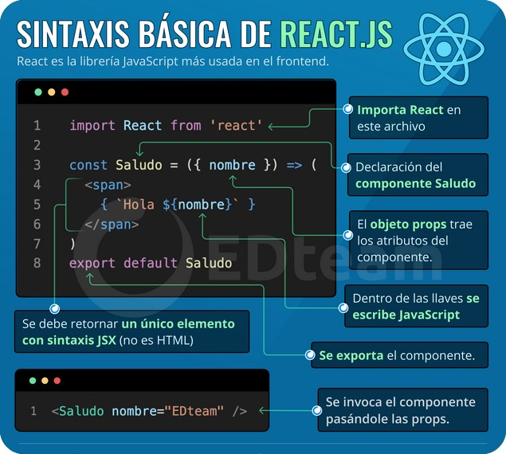

El Virtual DOM es una copia del DOM real, el DOM real es el que se crea cuando se ejecuta una página web. El Virtual DOM se crea al usar React y al detectar cambios de estado o eventos activados en la página web, este se compara con el DOM real para detectar los cambios puntuales del DOM y renderiza la parte específica donde se ejecuta el cambio evitando que se renderice toda la página mejorando el desempeño de la página web.
El Ciclo de Vida es una serie de etapas de un elemento en las que se crea, tiene un propósito y al cumplir este propósito desaparece.
El Estado se encarga de mantener o transmitir valores entre componentes para que los componentes reaccionen de acuerdo con el estado, el estado se crea por medio de interacciones en la página web.
Los Eventos desencadenan acciones a través de interacciones en la página en la página web.
Los Hooks son funciones que ayudan a controlar el ciclo de vida de los componentes funcionales, también conectan de una forma fácil a los componentes con los estados o eventos.
Los Elementos (son las etiquetas de JSX) reciben atributos o eventos y (casi siempre) se transforman en etiquetas de HTML.
Componentes.
Los componentes son grupos de elementos que reciben propiedades (props) y pueden crear estados o efectos.
Cada componente de React necesita ser nombrado con la primera letra en mayúscula, además necesita contener solamente un componente o elemento, por lo que se debe anexar todo el contenido en un componente, elemento (<div> </div>), elemento vacío (<> </>) o en un componente <React.Fragment> </React.Fragment>, este último requiere importar react en el documento (import React from 'react') y se convierte en una etiqueta invisible al renderizarse (es importante colocarle las primeras letras de las palabras en mayúsculas porque es un componente).
La desventaja de utilizar elementos div para encapsular es que al renderizar la página se creará una etiqueta div por cada componente pudiendo crear problemas en el CSS, además de crear código de más. Esto lo soluciona React.Fragment
EGComponente.js
function EGComponente() {return ( <React.Fragment> ...
</React.Fragment> ); }
Cuando se crea un componente se debe crear su propio archivo en la carpeta src y exportarlo a App.js:
src/EGComponent.js
/* En cada componente se importa el método React desde la librería de react */import React from 'react';
function EGComponent(){ return ( /* Se coloca el código a utilizar */
);
}
/* Se puede exportar el componente de 2 maneras: */
/* Exportación por default: permite renombrar al componente cuando se importe en otro componente */
export default EGComponent;
/* Exportación nombrada: no permite renombrar el componente al importarlo en otro componente */
export { EGComponent };
src/App.js
import React from 'react';/* Con la exportación por default: */
import ExGratComp from './EGComponent';
/* Con la exportación nombrada: */
import { EGComponent } from './EGComponent';

Propiedades.
Los atributos de los elementos como className=' ', src=' ', title=' ', etc. son considerados como propiedades. Las propiedades de los componentes son lo que serían parámetros o atributos
Las propiedades permiten mandar un valor o estado en forma de atributo en el momento en que se invoca el componente, entonces componente actualizará su contenido con los valores o estados que se han mandado por medio de la invocación.
props
Hay diferentes formas de recibir propiedades, una es utilizando la palabra "props" que es una convención para utilizar propiedades, ejemplo:
Se invoca un componente (App) y se le manda una propiedad denominada "saludo" con un string como valor.
src/index.js
...ReactDOM.render(
<App saludo="Ola k ace?" />, ...
En el archivo del componente, se le indica al componente que recibirá propiedades por medio de la palabra "porps", y para utilizar las propiedades recibidas se escribe dentro de llaves la palabra props.nombre de la propiedad
src/App.js
...function App(props) {
return ( ... <a ...> { props.saludo } </a> ...
En el caso anterior se anexará el valor ("Ola k ace?") de la propiedad saludo en el contenido de la etiqueta <a> </a>
children
A los componentes también se les pueden agregar una propiedad especial llamada children que permite insertar todos los elementos y propiedades que contenga un componente, ejemplo:
Se invoca un componente (App) y se le agrega un atributo como propiedad, aparte, adentro del componente se le insertan elementos.
src/index.js
...ReactDOM.render(
<App pregunta="¿Cómo t va?"> <h1>Saludo</h1> <p>holi holilla</p> </App>, ...
En el archivo del componente, se resiven las propiedades por medio de la palabra "props". Para utilizar los elementos y componentes que se resiven, se escribe dentro de llaves la palabra props.children.
src/App.js
...function App( props ) {
return ( ... { props.children } <a ...> { props.pregunta } </a> ...
El resultado del ejemplo quedaría:
Saludo
holi holilla
¿Cómo estás?
key.
Cuando se importa un componente y este componente tiene una lista de valores, se debe agregar una propiedad especial llamada key={ } para renderizar los elementos de la lista, esto ayuda a que React identifique los elementos mutables e inmutables de la lista evitando que renderice elementos que no son modificables, ejemplo:
En el archivo de un componente se le indica al componente que resivirá propiedades y se indica con props.text en donde se renderizará la propiedad "text":
src/OtroComponente.js
import React from 'react';function OtroComponente( props ){
return( <li>El item es: { props.text }</li> ); }
export { OtroComponente };
Se importa el componente en donde se utilizará y mediante un map se pide que se utilice el código del componente importado (OtroComponente) con cada elemento del array (listItems).
src/App.js
import React from 'react';import { OtroComponente } from './OtroComponente';
const listItems = [
{ text: "Uno", completed: false }, { text: "Dos", completed: false }, { text: "Tres", completed: false }, ];
function App( ){
return( <ul> { listItems.map ( eItem => ( <OtroComponente key={ eItem.text } text={ eItem.text } /> ) ) } </ul> ); }
El renderizado quedaría:
- El item es: Uno
- El item es: Dos
- El item es: Tres
Estilos.
Existen diferentes formas de agregar CSS en un proyecto en React.
Directamente en archivos javascript.
Estilos en línea dentro del componente:
En las formas que implican usar CSS en archivos JavaScript se deben colocar las propiedades sin guiones y con formato camelCase, además de que los valores se colocan entre comillas como strings (backgroundColor: 'pink',).
Se crea un objeto que contendrá los estilos y éste objeto será colocado en el elemento principal que agrupa todo en el return (no funciona en React.Fragment por ser un elemento invisible en el navegador), ejemplo:
function AComponent() {
return( /* Se tiene que colocar doble llave. */ <div style={ backgroundColor: 'rgb(22, 143, 141)', color: 'aliceblue', } }> ... </div> ); }
Estilos en línea fuera del componente:
Otra manera de agregar estilos en línea (similar a la anterior) es creando un objeto afuera de la función, ejemplo:
const estilos = {
backgroundColor: "rgb(22, 143, 141)", }
function AComponent( ) {
return( <div style={estilos}> ... </div> ); }
Importando documentos de estilo.
Otra forma es importando un documento de estilo (como css o scss), en el documento de estilo se utiliza sintaxis normal, este documento se crea dentro de la carpeta src.
En el archivo javascript se le deben colocar las clases a los elementos con el atributo className=" ", ejemplo:
src/Menu.js
import React from "react";import "menu.css";
function Menu( ) {
return( <nav className="menu"> ... </nav> ); }
Condicionales en las clases.
Si se utilizan clases de estilos, pueden definirse usando código de JavaScript para manipularlas de acuerdo a condicionales. Se tiene que utilizar comillas invetidas ( ` ` ), ejemplo:
src/FormItems.js
import React from "react";function FormItems(props) { return( <li className="class-item"> /* Al elemento p se le agregará la clase "class-item__p" solamente si la propiedad especificada (props.completed) marca true, se le anexará una segunda clase "class-item__completed" */ <p className={ ` class-item__p ${ props.completed && 'class-item__completed' } ` }> {props.text} </p> </li> ); }
...
Continuando con el ejemplo y retomando el ejemplo de la key, así se mandarían las propiedades:
src/App.js
...<React.Fragment>
<Form> { listItems.map( item => ( <FormItems key={ item.text } text={ item.text } completed={ item.completed } /> ) ) } </Form> </React.Fragment>
...